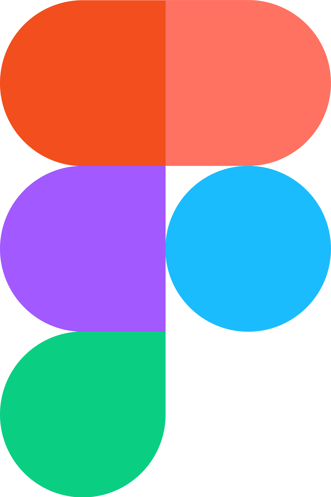
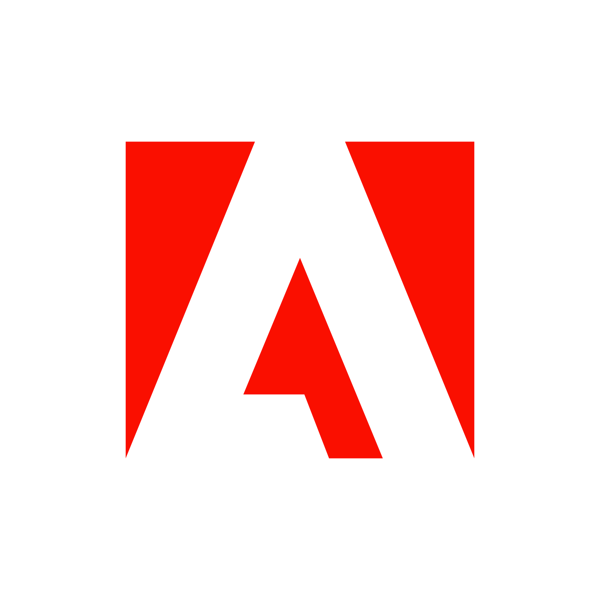
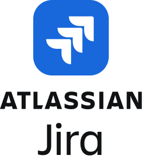

What makes Karthik different?
I love to turn UXR insights into actionable design strategies that create tangible business value. My work always makes information accessible and usable for clients and end-users alike, and improves organizational outcomes. I also help perfect or introduce workflows, including the use of AI-tools / GenAI, to optimize product/service delivery and improve overall internal team efficiency.
Information Architecture
Front End Web Development
High Fidelity UI Prototyping
User & Competitor Research
Journey Mapping & Task Flows
Service Blueprinting


